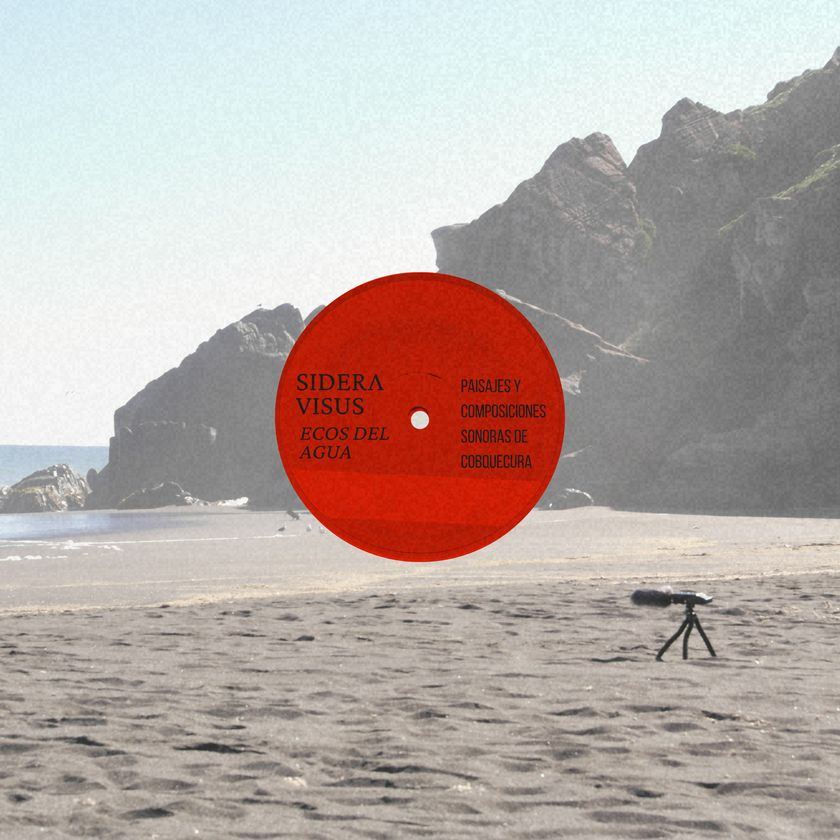
Ecos del Agua
Six soundscape compositions from the coast of Cobquecura, built with granular synthesis, sampling, sequential synthesis and study of the ronroco.
Néstor Paredes Ulloa
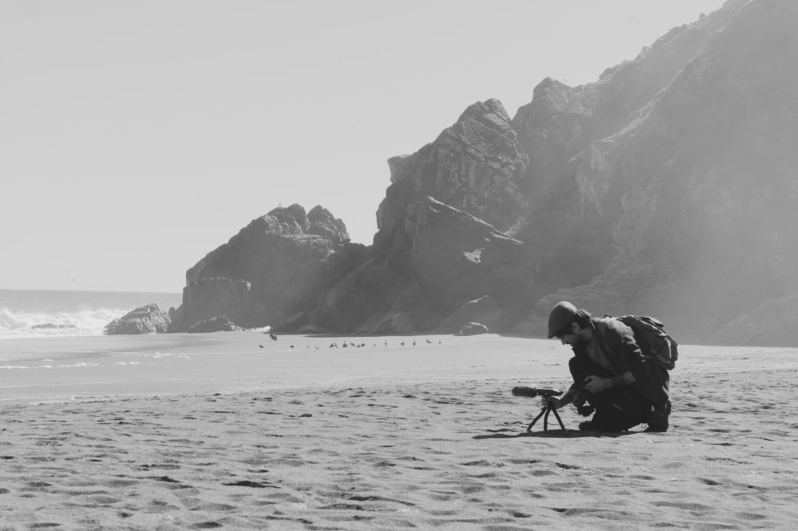
One territory, four layers: the first compositional gesture is separating what the place sounds as a whole
Sidera Visus is the sound art project of Néstor Paredes Ulloa, an anthropologist and sound artist working from southern Chile at the meeting point of territory, listening and materiality. Each work begins with soundscapes and field recordings gathered in a specific place: a coastal wetland, a sea cave, a river basin, a native forest reserve. Living and inert elements such as water, wind, birds and stone become context and compositional matter at once.
The practice joins sound with the hand. Illustration, cyanotype and hydrolysis printmaking on metal plates meet installation and multichannel sound, and each piece activates a landscape as a physical, temporal and affective presence in the room.
Composition grows from continuous research into experimental synthesis and sound design as a way of working with the unstable, the organic and the unpredictable. Space, echo, repetition and slow mutation, carried over from the philosophy of dub techno, are the working tools. Sound and silence move together as a material that breathes, shifts and leaves traces, and the pieces unfold in drift, suspension and expanded time.
The aim is to hear how a place speaks through its textures, rhythms and residues, and to carry that listening into works that combine observation, intervention and poetics. Exhibiting or releasing a piece makes the territory resonate, with its memories and its slow transformations.
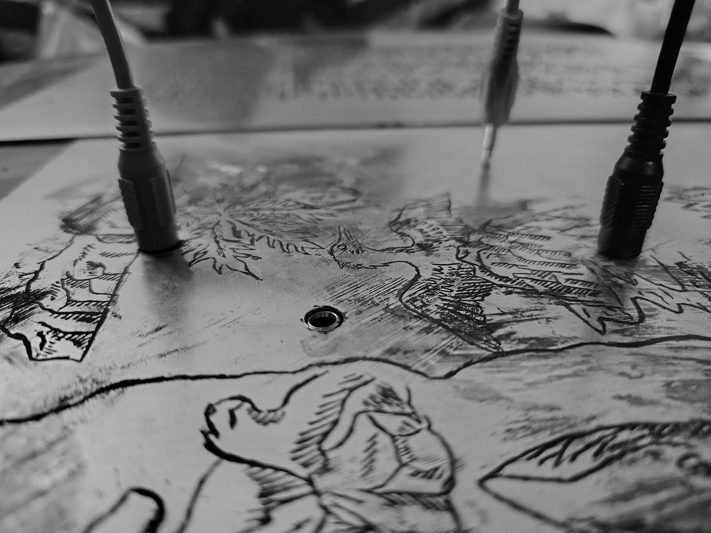
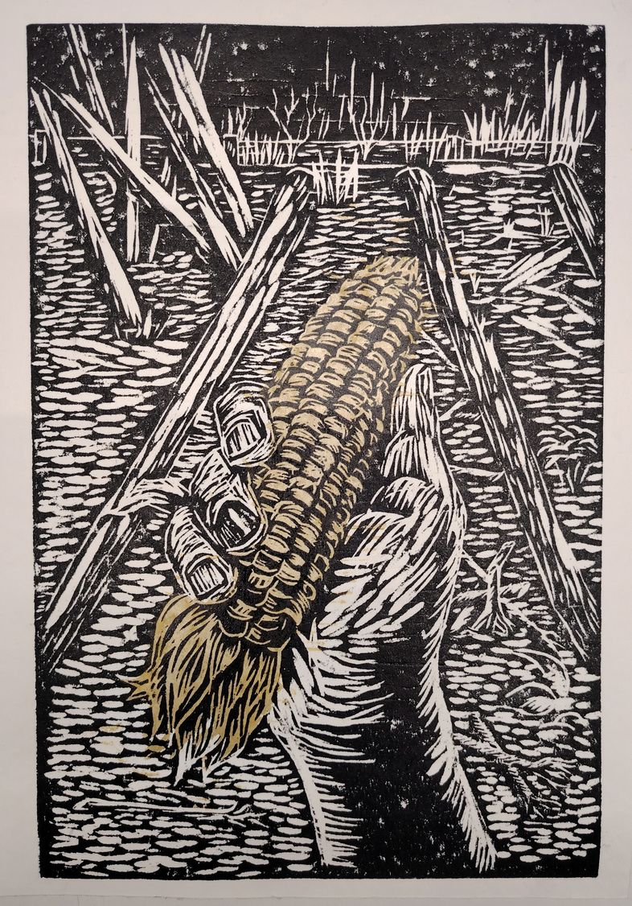
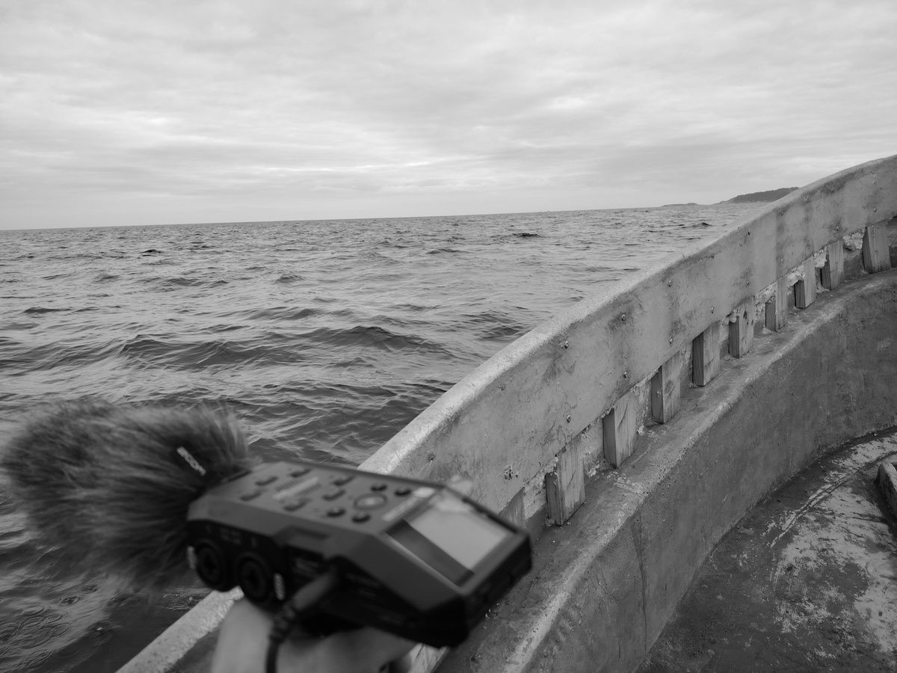
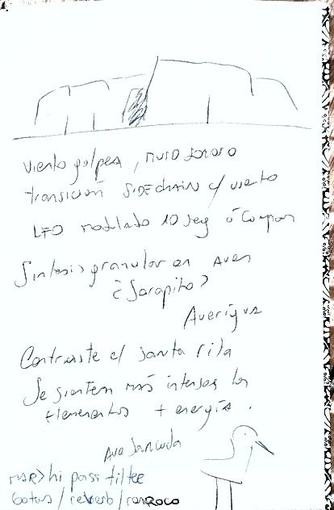
The project rests on eleven years of territorial work as an anthropologist in urban, rural and Indigenous contexts of southern Chile, through qualitative studies, data science and publications. Alongside that research ran a creative path in writing and sonic experimentation where sensory ethnography, literature and sound art converge.
Sound here is an aesthetic phenomenon, a form of situated knowledge, a means of cultural transmission and a way to tell stories that are hidden or under threat. Listening works as anthropological method, poetic gesture and heritage record.
Sidera Visus formed in May 2019 in Chillán, Ñuble. Its language moved from meditative work with Indian sitar, Persian setar, winds and tabla toward analog synthesizers, samplers and field recording, and settled into a fusion of minimalist ambience, electroacoustics and acoustic poetry, always in dialogue with social, political and territorial realities.
Sound as relational knowledge between a community and its environment.
Soundscapes as cultural and environmental heritage to be kept.
Recording and composing as co-fabrication with a place and the people who inhabit it.
Weeks of listening before describing, and the question of which sound marks give a place its acoustic identity. From her comes the distinction between noise that isolates and noise that expresses community.
Woodcut and soundscape for Cobquecura
Fondart Regional, Artistic Creation 2026 · Folio 828015
It all began with the wind. The wind hammering against the stone church in Cobquecura. In my notebook I wrote down “sound wall.”Production notes
An interdisciplinary project with printmaker María José Sepúlveda. Sidera Visus recorded the soundscapes of the Taucú wetland and the Cobquecura coast in Ñuble and composed soundscape pieces from them, each paired with a woodcut and a point on an interactive sound map. The works meet in an ephemeral installation with public, inclusive access, shown at the Museo de la Gráfica in Chillán, the Museo de Cobquecura and the Salón Municipal de Cobquecura.
Within a few kilometres of coast the recordings revealed six or seven distinct acoustic environments, each asking for its own decisions: where to place the microphone, how long to stay still, which frequencies to clean and which to leave rough.
A resonance box. Air compresses against the rock wall and behaves like a natural high-pass filter.
Dark and territorial. Bats, shadow, a close acoustic of stone.
Humid, intimate. Still water between rocks, birds close to the microphone, recorded from a kayak.
A citadel struck by waves and wind, with its own pulse and distant guttural cries.
Humidity, native birds, cormorants.
Owls and crickets in a warm chorus over the sea.
Recording in 32-bit float to keep the full dynamic range. Sometimes the Ableton Move is plugged into a microphone on site to fuse the environment with layers of synthesis right there; sometimes the handpan marks rhythms, pauses and melodies. Composing with wet feet.
Back in the studio each recording is divided by frequency range, isolation and noise cleanup: water from wind, birds from surf, low end from general ambience. Choosing figure and ground in a soundscape is already intentional listening, and it is the first compositional gesture.
Granular synthesis over birdsong, species identified afterwards from calls, photographs and georeferenced notes with iNaturalist. High- and low-pass filters with oscillating LFOs over the water, sidechain tied to the wind envelope, dub delay on the last note of a call. Every effect answers something already present in the recording.
The water of Cobquecura carries recurring fundamentals, as if the place had its own tuning. Synth pads amplify partials hidden in the broadband noise of the sea. Chords appear as ghosts that fade into long reverb and return processed, turning in modal circles such as Dm, C, G, Dm without coming to rest, like the waves. The ronroco anchors; the handpan in Celtic D minor opens space above a drone on D.
Every track runs through a source panner on a sphere with height and distance. Water holds the front as the horizon. Ronroco and handpan stay centred, the body entering the landscape. Granulated bird phrases cross behind the listener, entering on one side and leaving on the other. A decoder sets how many speakers the same composition lives in for each venue.
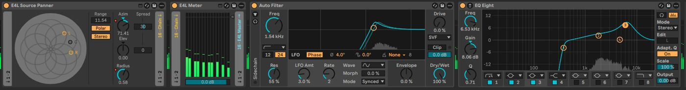
Instrumental, closest to pure composition.
The humidity of Comulyao: native birds, harmonic textures, cormorants with tremolo auto-pan.
Open field facing the coast: birds, waves, cows, a southern lapwing at the water’s edge.
Santa Rita: the cave, the shadow, the bats.
Night and the sea: owls and summer crickets.
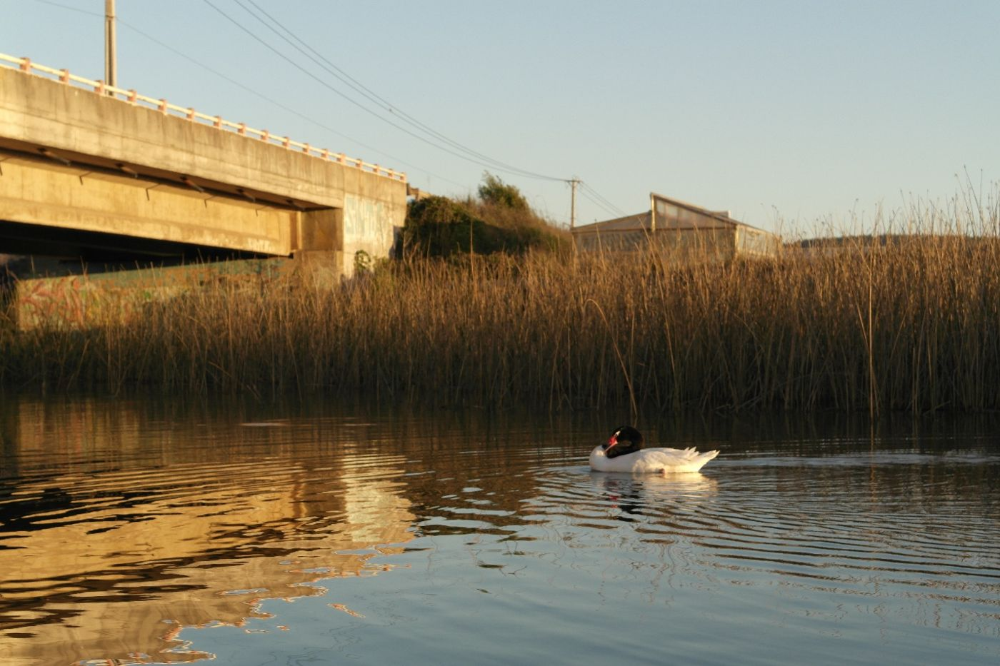
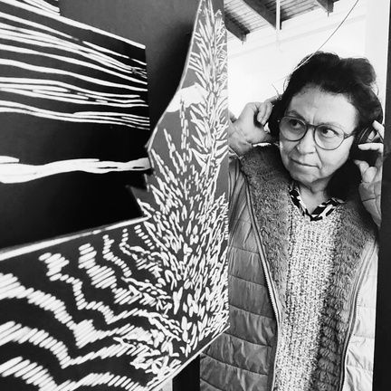
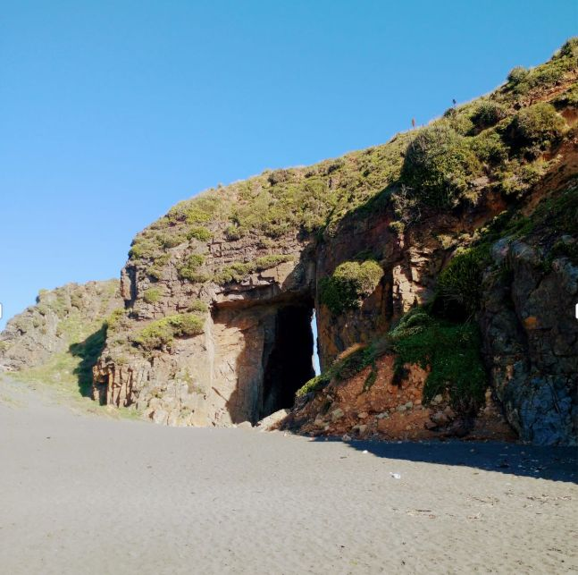
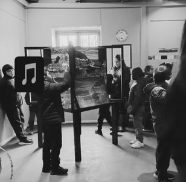
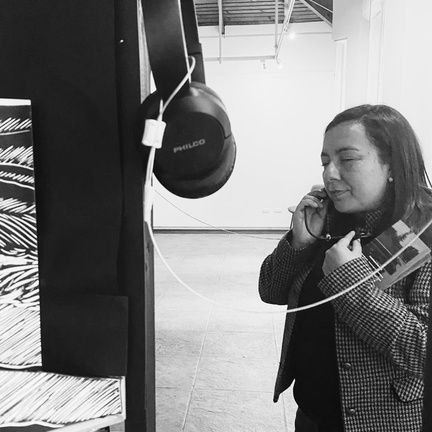
A swan stayed alone and motionless on the calm water. The note in the margin, beside a sketch of harmonic progressions in D minor: “it looks like the swan’s mate died (they mate for life).” Half ornithology, half feeling. The work asks for a listening that registers frequencies and also what those frequencies do to the body standing there, cold, shoes wet, waiting for the wind to drop so the take stays clean.
Exciter transducers on metal plates etched by electrolysis, cymatics, and an interactive sound map whose digital audio decoders feed a self-built mixer. Each device answers one question: how a visitor who has never been to Cobquecura can feel the place passing through the body as well as the ears.
Published on Bandcamp and SoundCloud. Each record grows from the soundscapes of one territory in southern Chile.

Six soundscape compositions from the coast of Cobquecura, built with granular synthesis, sampling, sequential synthesis and study of the ronroco.
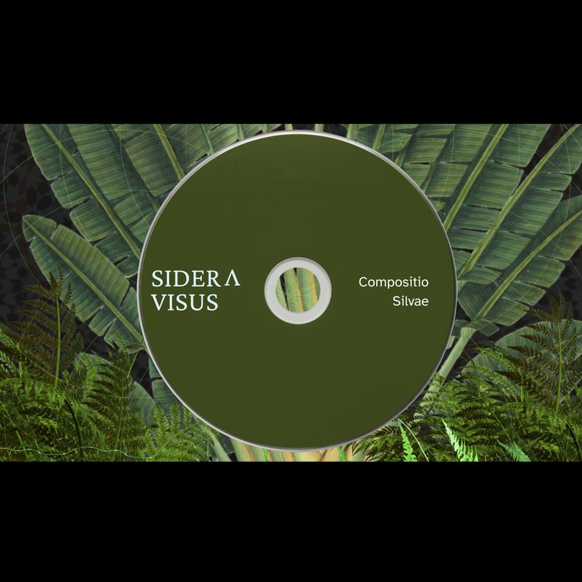
Recordings from a creative retreat between 2019 and 2023, with three previously unreleased tracks. Produced in Los Ángeles, Biobío.
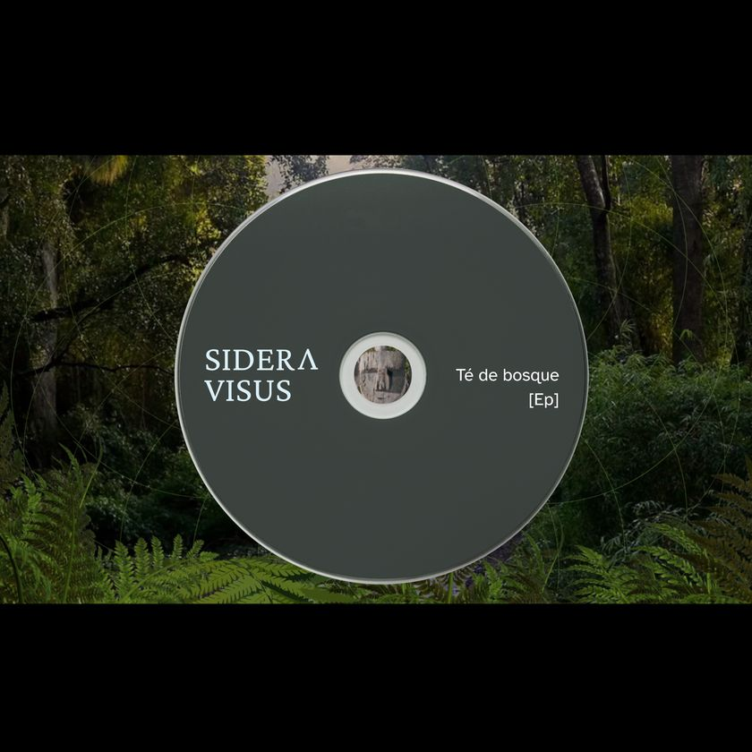
Composed from soundscapes of the Cerro Ñielol National Reserve in Temuco, with sampling, subtractive and sequential synthesis on the Korg Wavestate, and ethnic instruments.
La Iglesia de Piedra, selected for the Acousmatic Listening Room of the NOIS//E Festival and Symposium.
LP Ecos del Agua, selected for the EUM programme, an open call curated by Lukas Kühne, Fabrice Lengronne and Pol Villasuso.
Live sets are built in Ableton’s Session View, transforming field material, synthesis and granular layers in real time.
| Date | Event | Place | Description |
|---|---|---|---|
| 2026 | Ecos del Agua | Cobquecura · Chillán | Sound artist of the Fondart project. Exhibitions at the Museo de la Gráfica, Museo de Cobquecura and Salón Municipal de Cobquecura. |
| 2026 | Workshop: Introduction to soundscape | Cobquecura | Theory and practice of soundscape and sound composition, with field capture on the coastline and editing in the classroom. |
| 2026 | Workshop: Music production with Ableton Live | Cobquecura | Five-hour introduction to independent music production. |
| May 2026 | Town Session, Electronic Music Gathering | Mulchén | Live set of fifteen original tracks with synthesizers, sampling and granular synthesis of soundscapes. |
| Feb 2026 | Electrónica y Escombros vol. III | Mulchén | Real-time improvisation with synthesizers and groovebox: subtractive low layers, granular synthesis over bird recordings and territorial ambiences from the Los Lagos region. |
| Feb 2025 | Electrónica y Escombros vol. II | Mulchén | Live set reworking tempo, effects and chords from COmpositio Silvae and Té de bosque. |
| 2024–2025 | Jam sessions with Nodo Infinito | Los Ángeles | Monthly sessions with the collective, centred on experimental synthesis, sampling and acousmatic practice. |
| 2017–2018 | Carnatic music workshops | Chillán | Talks on ethnic instruments and the Carnatic tradition with Prof. Iván Jadresic, closing with a jam session. |
| 2017–2018 | Sound therapy sessions | Chillán | Sound relaxation with Tibetan bowls, sitar and ethnic instruments. |
| 2016–2018 | Carnaval Cultural Fundación Daya, Ecoferia, Eco Yoga Fest | Chillán | Synth live sets and jam sessions with sitar and synthesizers at public events. |
| 2015–2016 | Tripantu Fest | Biobío · Maule | Jam sessions with synthesizers and ethnic instruments with the band Chacruna. |
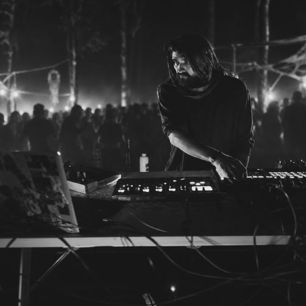
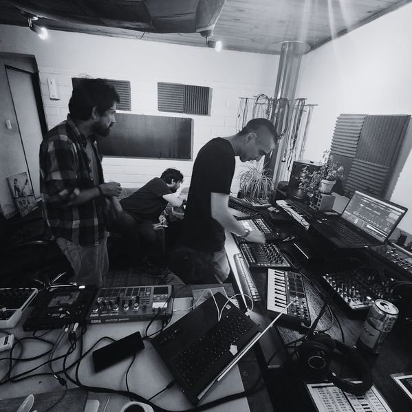
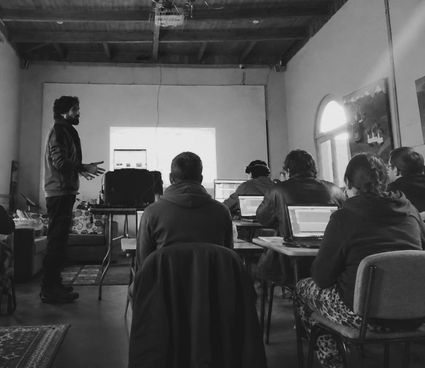
Self-taught in production and sound design since Ableton Live 8 in 2012, with Ableton as the centre of composition and performance ever since.
Open to festivals, residencies, listening rooms, installations and collaborations around soundscape and territory.